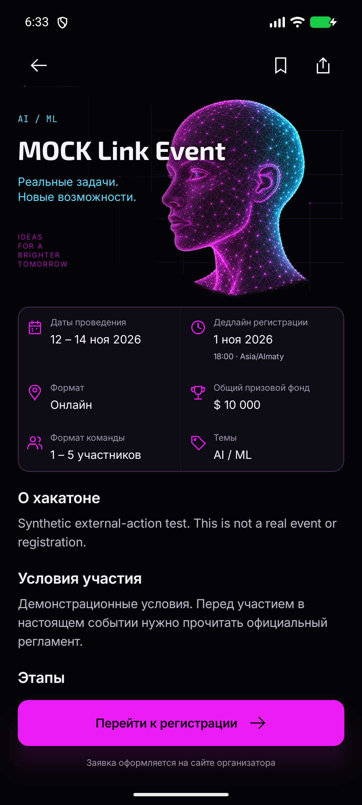
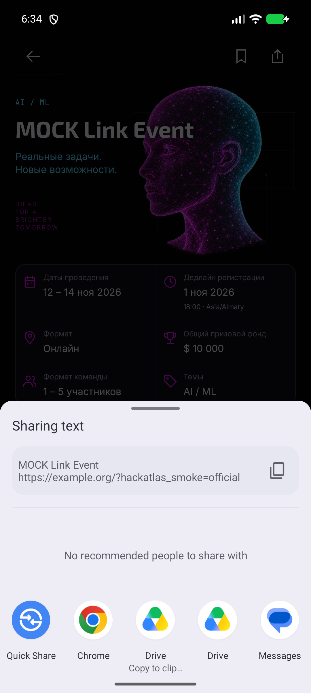
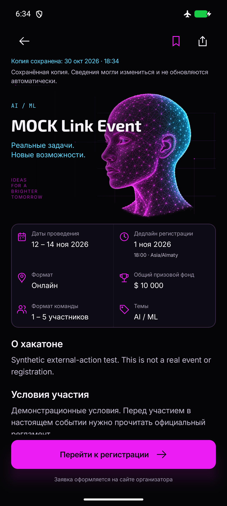
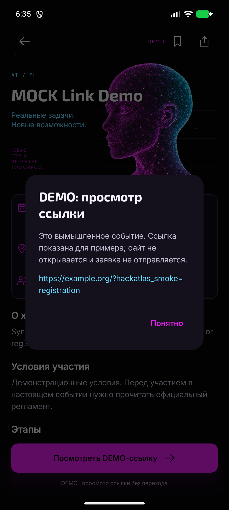
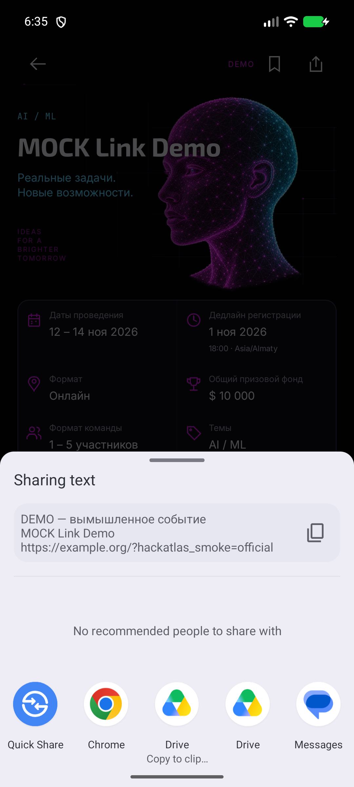
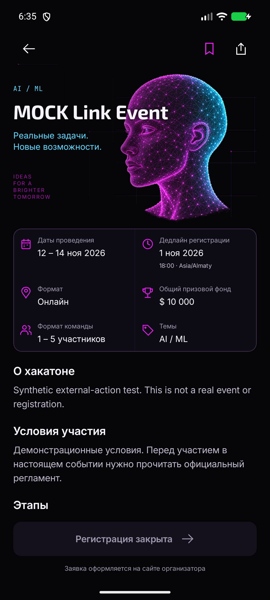

HACKATLAS / M2
Регистрация и системное «Поделиться»
Скриншоты настоящего Android-приложения на Pixel 8. Иллюстрации, цвета и шрифты сохранены. Меню «Поделиться» оформляет сама ОС.
Все события на этих снимках — synthetic MOCK-данные отдельного тестового сервера, не реальные хакатоны B1. Получатель не выбирался, сообщения и заявки не отправлялись. На первом запуске Chrome показал onboarding: подтверждена передача HTTPS-ссылки, а не загрузка страницы регистрации. iOS требует отдельной проверки на Mac.
APK с исправлением IPv6 для локального backend :8080 · debug, не production; backend должен быть запущен. 146 тестов, build/lint/release gate PASS. Ниже — скриншоты исходного этапа; после исправления проверки URL эмулятор повторно не запускался, UI не менялся. Исходный APK для smoke :8769 требует запуска fixture-сценария.

Активная регистрация
HTTPS-ссылка передаётся ОС. Заявка оформляется на сайте организатора.

Системное меню
Название и публичный URL. Отмена сохраняет подробности и прокрутку.

Из сохранённой копии
Действия берут данные из snapshot, новый запрос к API не нужен. Загрузка сайта и доставка сообщения могут требовать сеть.

DEMO без регистрации
Только просмотр ссылки. Сайт не открывается.

Честная пометка
В тексте указано, что событие вымышленное.

Закрытая регистрация
Кнопка неактивна; официальный сайт доступен отдельной ссылкой в блоке источника.